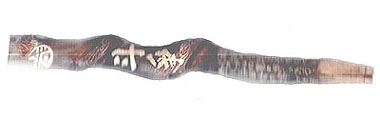

<!DOCTYPE HTML PUBLIC "-//W3C//DTD HTML 4.01 Transitional//EN">
<HTML>
<HEAD>
<META http-equiv="Content-Type" content="text/html>
<META http-equiv="Content-Style-Type" content="text/css" media="all">
<TITLE>みいけ展示室</TITLE>
</HEAD>
<BODY>
<BLOCKQUOTE>
<TABLE>
  <TBODY>
    <TR>
      <TD width="516">
      <P class="MsoNormal" style="text-indent:71.65pt;mso-char-indent-count:4.92"><B style="mso-bidi-font-weight:normal"><FONT color="red" size="+1">展示品</FONT><SPAN lang="EN-US" style="font-size:16.0pt;
mso-font-width:90%"></SPAN></B><BR>
      </P>
      <TABLE>
        <TBODY>
          <TR>
            <TD width="91"></TD>
            <TD width="404">　<B>ホッパーパイプ</B><P>
            </TD>
          </TR>
        </TBODY>
      </TABLE>
      <p class=MsoNormal style='text-indent:11.0pt;mso-char-indent-count:1.0;
line-height:17.0pt;mso-line-height-rule:exactly'><FONT face="MS UI Gothic">ホッパーパイプを送ってきてくれた
人は永嶋さん、昭和7年生まれ。三池闘争後、首を切られた1200名の中の１人。その時29歳だった。
<spanlang=EN-US style='font-size:11.0pt'></span><BR>
　同パイプは、長さ25センチ、三池労組のマークと共に「斗争」と記され、その下には「頑張ろう突き上げる空に　くろがね
の男の拳がある　燃え上がる女の拳がある　斗いは今から斗いは今から」と書き込まれてある。パイプの裏側には「企反・安保
斗争記念　昭和35年1月25日」とある。<BR>
　「ホッパー」とは貯炭槽のこと。昭和34年11月から1年間近く繰り広げられた三池闘争の中で、ホッパーは闘う三池炭鉱労働者
にとって最後の砦だった。その砦には、オルグの人々も含めた1万人以上の労働者が結集し、働くものの砦を死守した。そんな中で
誰が最初に始めたのか、木の根っ子などを利用してたばこパイプが作られた。<BR>
　護身用に作ったという話もあるが、そればかりではないだろう。争議妥結後、帰って行くオルグの人たちに友情の証しとして贈ら
れたりした。筑豊の森田ヤエ子が作詞し、三池炭鉱労働者作曲家だった荒木栄が曲をつけた「団結おどり」には、「オルグ記念の
ホッパーパイプ　ピケに来た　ピケに来た」という一節がある。三池を闘ってきた者たちの自宅床の間に、今も大切に飾っている
人も多い。
　</FONT></p>
      </TD>
    </TR>
  </TBODY>
</TABLE>
</BLOCKQUOTE>

</BODY>
</HTML>
